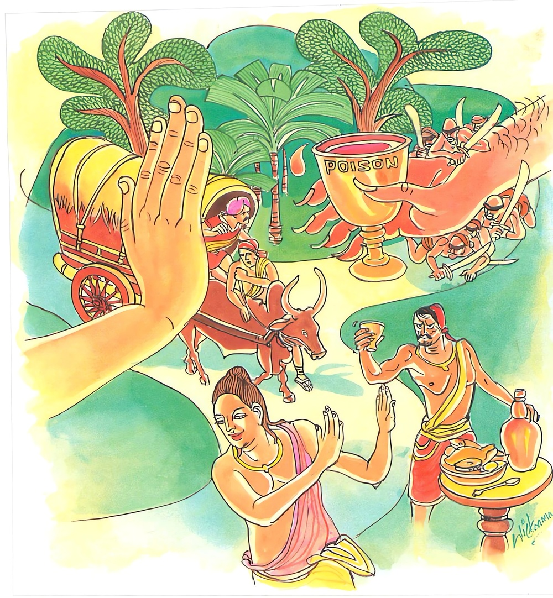

9-7 ධනවත් වෙළෙන්දෙක්
මෙම කතාව ධම්මපද අටුවාවෙන් ද කියවන්න.
වාණිජො’ව භයං මග්ගං අප්පසත්ථො මහද්ධනො
විසං ජීවිතුකාමො’ව පාපානි පරිවජ්ජයෙ.
(සොරුන් සිටි හෙයින් භය කටයුතු වූ මඟ වළහන්නා වූ) කැටි වැ යන සාත්තුවක් නැති (හෝ මඳ වූ සාර්ත්ථ පිරිසක් ඇති) බොහෝ ධන ඇති, වෙළෙඳක්හු මෙන් ද, හලාහල විෂයක් දුරු කරණ, ජීවත් වනු කැමති එකක්හු මෙන් ද, අකුශල කර්ම දුරු කරන්නේ ය.

අප බුදුරජුන් දවස සැවැත් නුවර ධනවත් වෙළෙන්දෙක් විසී ය. ඔහු දැහැමි ය. ඉවසන සුලු ය. භික්ෂූන් කෙරෙහි භක්තිමත් ය. දෙනු කැමැත්තේ ය. වෙළදාම් පිණිස තැන තැන යන්නේ ය. දිනෙක, මේ වෙළඳ තෙමේ, බරකරත්ත බර ගණනක් විකිණිය යුතු නොයෙක් බඩුවලින් පුරවා, ගොනුන්, බැඳ, සූදානම් කොට, පන්සලට ගොස්, “මම අසුවල් පළාතට වෙළඳාම් පිණිස යන්නට අදහස් කොට සිටිමි, ඒ පළාතේ යනු කැමැති ස්වාමීන් වහන්සේලාට මා සමග යනු හැකි ය, කෑම් බීම් මම පිළියෙල කරන්නෙමි, ස්වාමීන් වහන්සේලාට එයින් කිසිත් කරදරයෙක් නො වන්නේ ය, මා හා වඩින්නට කැමැති නම්, සූදානම් වනු මැනැවැ” යි දන්වා සිටියේ ය. ඒ අසා බොහෝ ගණනක් භික්ෂූන් වහන්සේලා ද ඔහු සමග යන්නට සූදානම් වූහ. වෙළඳ තෙමේ භික්ෂූන් හා මගට බැස්සේ ය .
එ දවස, එහි ඔබිනොබ හැසුරුනු සොරු, මේ බව දැන ඔහු අල්ලා ගන්නට සිතා මග දෙපස වනයෙහි සැඟවී සිටියහ. වෙළඳ තෙමේ භික්ෂූන් සමග වනයට ඇතුල් වන දොරටුවෙහි එක් ගමෙක නවාතැන් ගත්තේ ය. කරත්ත ලිහා හැර, ගොනුන්ට තණ පැන් දෙමින්, දෙතුන් දිනක් එහි නැවතී සිටියේ ය. භික්ෂූන් වහන්සේලාට දිනපතා ආහාරපාන පිළියෙල කොට දෙන්නේ ය. කල් බලමින් වනයෙහි සැඟවී සිටි සොරු, කල් ගෙවී යන කල්හි “යව, වෙළෙන්දා කවදා එන්නේ දැ, යි දැන එව” යි එක් මිනිසකු එහි පිටත් කොට යැවූහ. ඔහු එහි ගොස්, “වෙළෙන්දා ඉදිරි බලා යන්නේ කවදා දැ” යි එගම විසූ යහළු ගම්වැසි මිනිසකු අතින් විචාළේ ය. “තව දෙතුන් දිනකින් ඉදිරි බලා යනු ඇතැ” යි ඔහු කී ය.
එසේ කියා ඔහු කුමක් නිසා මෙසේ අසවු දැ, යි ඔහුගෙන් ඇසී ය. “අපි වෙළෙන්දා අල්ලා, බඩු පැහැර ගන්නට, මග රැදී සිටුමු” යි සොරා කී විට “එසේ නම් වහා යව, අද හෙට ම වාගේ වෙළෙන්දා මෙ තැනින් නික්ම යනු ඇතැ” යි කියා සොරා පිටත් කොට යවා “මට සොරුන් හා එකතු වීම හොඳ දැ වෙළෙන්දා හා එකතුවීම හොඳ දැ” යි සිතා බැලී ය. එහි දී ඔහුට සොරුන් හා එකතුවීමෙන් වැඩක් නො වන බව පෙනී ගියේ ය. එහෙයින් ඔහු වෙළෙන්දා ලඟට ගොස් “තමුසේ මෙතැනින් පිටත් ව යන්නහු කවදා දැ” යි වෙළෙන්දාගෙන් ඇසී ය. “අද හෙට ම පිටත් ව යන්නෙමි” යි ඔහු කී විට “එසේ නො යව, මාගේ කීම අසන්න, තමුසේ අල්ලා, ඉණ ඉහ කඩා ගන්නට බලාපොරොත්තු වන හොරු රැළක් මේ වනයෙහි සැගවී සිටින බව මම දනිමි, ඒ නිසා තව කිහිපදිනක් මෙහි ම නැවතී සිටින්නැ” යි කී ය.
අනෙකා “තමුසේ කෙසේ දන්නහු ද” යි ඇසී ය. “මම හොඳට දනිමි, මාගේ යහළුවෙක් ඒ හොරු රැළේ සිටි යි, ඔහු හා කතා කළ මට මෙය ඔහුගෙන් දැනගන්නට ලැබුනේ ය” යි කී ය. “හා, හොඳයි, බොහෝ ම ස්තුති යි, මම ඉදිරියට නො යමි, පෙරළා ගම් බලා යමි” යි වෙළෙන්දා කීයේ ය.
“දෙ තුන් දිනකින් වෙළෙන්දා එනු ඇතැ” යි මග බලා හුන් සොරු, කල් යන කල්හි නැවැතත් ඒ මිනිහා ම “යව, වෙළෙන්දා එන දිනය නියම වසයෙන් දැන එව” යි පිටත් කොට යැවූහ. ඔහු පෙර සේ තම යහළුවා වෙතට ගොස් වෙළෙන්දාගේ ගමන් තොරතුරු දැන, සොරුන් වෙත ගොස්, වෙළෙන්දා ඉදිරියට නො ගොස් පෙරළා ගම් බලා යන බව සොරුන්ට දැන් වී ය.
සොරු වහවහා ඒ වනයෙන් නික්ම ගොස් වෙළෙන්දා ගම් බලා යන මග සැඟවී සිට ගත්හ. තම සොරමිතුරාගෙන් ම සොරුන් මෙසේ සිට ගත්බව දැන ගත් ඒ ගම්වැසි තෙමේ ඒ වගත් වෙළෙන්දාට රහසින් කී ය. එවිට ඔහු “මා මෙහි රැඳී සිටියත් මට අමුතු ගැහැටෙක් නැත, ගමට ගියත් මෙයට වඩා. පහසුවෙක් ද නැත, එහෙයින් තැන තැන නො ගොස් මෙහි ම රැඳෙමි” යි සිතා භික්ෂූන් වෙත ගොස් “ස්වාමීනි! මාගේ ඉණ ඉහ කඩා ගැණීමට බලාපොරොත්තුවෙන් අප එනු බලා ඉදිරියෙහි සිටි හොරු රැළක් දැන් අප ගමට යන බව දැන එමග රැඳී සිටින බව මට දැනගන්නට ලැබී තිබේ, ඒ නිසා මම මෙතැනින් කොතැනත් නො ගොස් කිහිප දවසක් මෙහි ම නතර වන්නට සිතා ගතිමි, ස්වාමීන් වහන්සේලාත් මෙහි නවතිනු කැමැත්තෝ නම්, එසේ කරණු මැනැවි, තමන්ගේ කැමැත්තක් කළාට වරද නැත, නවතින්නෝ නම්, මම දන්පහන් පිළියෙල කරන්නෙමි” යි කියා සිටියේ ය.
භික්ෂූන් වහන්සේලා “අපට මෙහි නැවතී සිටීමෙන් වැඩෙක් නැත, මහත්මයා ටික දිනක් මෙහි නැවැතී සිට සොරබිය පහව ගිය කල්හි පෙරළා එන්න, අපි යන්නෙමු” යි කියා සැවැත් නුවරට ගොස් බුදුරජුන් ඉදිරියට පැමිණ වැඳ සිටියාහ. බුදුරජානන් වහන්සේ “කිම, මහණෙනි! තමුසේලා උපාසක තැන හා එක්ව නො ගියහු දැ?” යි ඇසූහ. “ස්වාමීනි! ටික දුරක් ගියෙමු, වඩා ඈත නො ගියෙමු, ඔහු අල්ලා ගන්නට සොරු දෙ මගෙක ම රැස් කකා සිටියහ. එහෙයින් ඔහු ඉන් ඔබ්බට නොගොස් එහි ම නැවතුනේ ය, එහි නැවතී සිටීමෙන් අපට වැඩක් නො වන නිසා අපි හැරී ආවෙමු” යි භික්ෂූන් වහන්සේලා කී හ.
ඉක්බිති බුදුරජානන් වහන්සේ “ධනවත් වෙළඳ තෙමේ, ජීවත්වනු කැමැත්තකු අති දරුණු විෂ දුරු කරන්නා සේ සොරුන් රැදී සිටි මග අත් හැරියේ ය, සසර බිය දනා සුලු මහණහු විසින් ද මේ තුන් බවය, සොරුන් නැගී සිටි මග වැනිය, යි සලකා පව් දුරු කළ යුතුය” යි වදාරා අනුසන්ධි ගළපා මේ ධර්මදේශනාව කළ සේක:-
වාණිජොව භයං මග්ගං අප්පසත්ථො මහද්ධනො,
විසං ජීවිතුකාමොව පාපානි පරිවජ්ජයෙති.
තමන් කැටුව යන වෙළඳුන් නැති මහදන වෙළඳකු, ප්රතිභය සහිත වූ මග හැර යන්නා සේ, ජීවත්වනු කැමැත්තකු දරුණු විෂය හැර දමන්නා සේ පව්කම් දුරු කරන්නේ ය.
වාණිජො ඉව = වෙළඳකු සේ.
සල්පිල් තබා හෝ රෙදිපොදි ඈ පොදි, කර හිස තබා හෝ කත්බර අතින් කරින් රැගෙණ හෝ යනාදී නොයෙක් ලෙසින් බඩු විකොට මුදල් උපයන්නේ වාණිජ නම්.
ඉව, යනු නිපාත ය. සමානාර්ත්ථ වාචක වේ. මේ සඳහා වගේ, වැනි, මෙන්, සේ, එව් යනාදී නිපාත සිංහලයෙහි යෙදේ.
භයං මගගං = බිය සහිත වූ මග.
භය නම්, චිත්තෝත්රාසය යි. සතුරන්ගේ රෞද්රභාවාදියෙන් හට ගත් චිත්තවිකලත්වය භය නැමැ, යි සාහිත්යදර්පණයෙහි කියන ලදී. මග්ගං යන්නට විශේෂණව සිටියේ ය. ‘ චොරෙහි පරියුට්ඨි තත්තා සප්පටිභයන්ති අත්ථො’ යනු අටුවා ය.
මගග යනු, ප්රතිපදා - ප්රකෘතිමාර්ග - උපාය - කථාප්රබන්ධ යන මෙ තැන්හි එයි. ජාතිජරාදුක්ඛයන්ගෙන් පරිපීඩීතසතත්වයන් විසින්, නිවනට පැමිණෙනු පිණිස ඒකාන්තයෙන් සෙවිය යුතු ප්රතිපදාව, මග්ග නමින් කිය වේ. විශේෂයෙන් කිය යුත්තේ, අවිද්යාවෙන් සම්මුඪවුවන් විසින්, ගවේෂණය කළ යුතු බැවින්, සෙවිය යුතු බැවින්, ආර්ය්යප්රතිපදාව මාර්ග, යි සසුනෙහි හඳුන්වන බව ය. ‘මං සිවං ගච්ඡති එතෙනාති = මග්ගො: නිබ්බානං මගෙගති, නිබ්බානත්ථිකෙහි වා මගගීයතීති - මග්ගො, කිලෙසෙ මාරන්තො ගච්ඡතීති = මගෙගා’ යනු නිරුක්ති යි.
මග යන්නන්, පාපහරින් තෘණරහිත කරණු ලැබේ, නුයි පථිකයන් විසින් සොයනු ලැබේ, නු යි මග්ග නැමැ, යි කියනු ලබන්නේ ප්රකෘති මාර්ගය යි. ‘පථිකෙහි මජ්ජතෙ නිත්තිණං කරීයතෙති = මගෙගා, පථිකෙහි මගගීයතෙති වා = මග්ගො’ යනු නිරුක්ති යි.
හිතදෑ නිපදවනු කැමැත්තන් විසින්, ඒ පිණිස යොදන උපායය, මගග, යි ද කියනු ලැබේ. ‘තං තං කිච්චං හිතං වා නිප්ඵාදෙතුකාමෙහි මග්ගීයති ගවෙසීයතීති = මගෙගා’ යනු නිරුක්ති යි. ඒ නම් උපාය ය. ‘තං තං උප්පත්තිං මග්ගති ගවෙසති ජනෙති නිප්ඵාදෙතීති = මග්ගො’ යනු ටිකා ය.
‘මහාවිහාරවාසීනං වාචනාමග්ගනිස්සිතං’ යන තන්හි යෙදී සිටි මග්ග ශබ්දය කියන්නේ කථා ප්රබන්ධය යි. එද මඟ මෙන් දිග් බැවින් එසේ හඳුන්වනු ලැබේ.
මෙහි වූ මග්ශබ්දය, ප්රකෘතිමාර්ගය කිය යි. ස්වභාවයෙන් පිහිටි මගය ඒ. ‘මාර්ග්යතෙ සංස්ක්රියතෙ පාදෙන, මෘග්යතෙ ගමනායාන්විෂ්යතෙ ඉති = මාර්ගඃ’ යනු නිරුක්තිවචන යි.
අප්පසත්ථො = වෙළඳ සමූහයක් නැති.
වාණිජො යනු, වෙසෙස යි. සත්ථ නම්, වෙළෙඳ සමුහය යි. වෙළදාමට බඩු ගෙණ අන් අන් පෙදෙස් කරා ගියා වූ හෝ යන්නා වූ ජනසමූහ තෙමේ ය සත්ථ ‘ භණ්ඩමූලං ගහෙත්වා වාණිජ්ජාය පදෙසන්තරං ගතො ජනසමූහො සත්ථොති වුච්චති’ යනු කීයේ, ඒ අරුත් පවසන්නට ය. මේ සත්ථය , ජඞ්ඝසත්ථ - සකටසත්ථ, යි දෙපරිදිය. විකිණිය යුතු බඩු විකිණීම පිණිස අතින් කරින් හිසින් කදින් ගෙණ, පා ගමනින් හැසිරෙන්නේ, ජඞ්ඝසත්ථ ය. බඩු ගැල් ආදියෙහි ලා ඒ ඒ තැන ගොස් වෙළඳාම් කරන්නේ සකටසත්ථ ය. ඒ මේ සකටසත්ථය අද නොයෙක් ලෙසින් වැසී ඇත්තේ ය. ගොඩ - දිය අහස් තෙමගින්ම මේ වෙණද සමූහය තෙමේ වෙණදාම් පිණිස ඒ ඒ යාන විශේෂයන්ගේ උපකාරයෙන් දේශාන්තර කරා යන්නේ ය.
මෙසේ මෙහි සැකෙවින් කියූ එක ද වෙළඳ සමූහයෙකුදු නැත්තේ අප්පසත්ථ නම්. මෙහි අප්ප ශබ්ද අභාවය කිය යි.
මහද්ධනො = මහත් ධන ඇති. බොහෝ ධනධාන්යාදිවස්තුව ඇති.
විසං ජීවිතුකාමො ඉව = විෂ නසා දුරු කොට ජීවත්වනු කැමැත්තෙකු සේ.
ප්රාණහරණය කරන්නා වූ ද්රව්යජාතීහු විෂ, යි කියත්. ‘විෂං ප්රාණහරං ප්රොක්තං' යි කියූයේ එහෙයිනි. කාකොලක - කාලකූට - හලාහල - සෞරාෂ්ට්රික - ශෞලකිකෙය - බ්රහ්මපුත්ර- ප්රදීපන - දාරද වත්සනාභ, යි ප්රධාන විෂජාතීහු නවයෙකි. ඇතැම් තැනක මේ ප්රධාන විෂජාතීහු මෙයට වෙනස් ලෙසින් ද දැක් වෙත්. උප විෂජාතීහු පසෙකි. අර්කක්ෂීර - සනුහික්ෂීර - කාලිහාරිකා - කරවීර - ධුස්තුර යි. මේ විෂය, ස්ථාවර - ජඞ්ගම යි දෙ කොටසකට බෙදේ. ස්ථාවරවිෂ, ස්ථාන දශයක් ඇසුරු කර යි. ජඞ්ගමවිෂ, ස්ථාන සොළොසක් ඇසුරු කෙරේ. විස්තර පොතපතින් දත හැකි ය. ජිවත්වනු කැමැත්තේ විෂ දුරු කරන්නේ ය, යනු ඒකාන්තය.
පාපානි පරිවජ්ජයෙ = පව් දුරු කරන්නේ ය.
භය සහිත මාර්ගය හැර දමා, තමා හා එක් වූ වෙළඳමුළක් ද නැති ව යන මහදන වෙළඳකු සේ ද, දරුණු විෂ නො කා දුරු කොට ජීවත්වනු කැමැත්තකු සේ ද, තමාට සුව කැමැති නුවණැති මිනිස් තෙමේ ස්වල්පමාත්රවුත් පාපයක් නො කරන්නේ ය.
ධර්මදේශනාවගේ අවසානයෙහි ඒ භික්ෂූහු පිළිසැඹියාවන් ලබා රහත් වූ හ. ධර්මදේශනාව පැමිණ සිටි පිරිසට ද වැඩ සහිත වූ ය.
මහාධනවණිග වස්තුව නිමි.